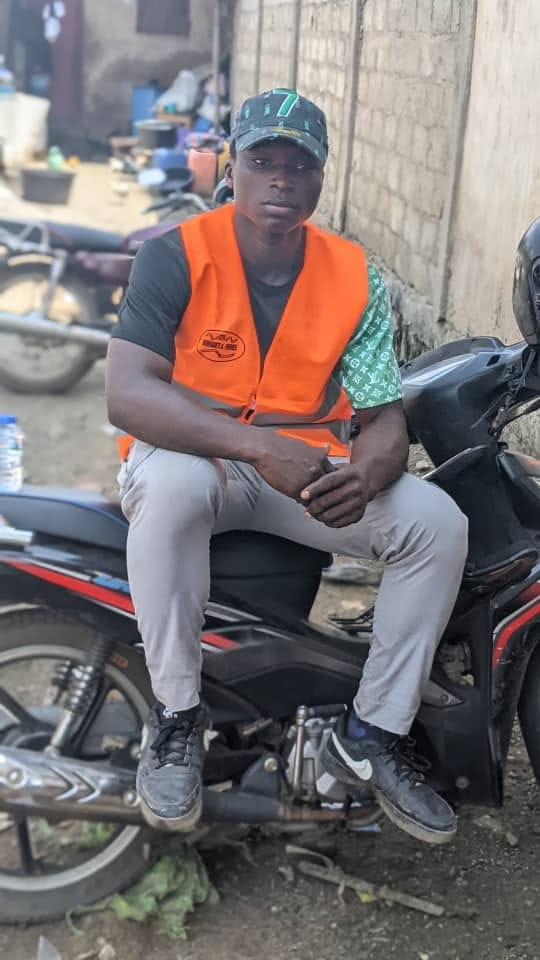

Menuiserie & mobilier
Portes, lits, meubles et aménagements fabriqués sur mesure pour votre maison.
↗MENUISERIE · CONSTRUCTION · FINITIONS
Du bois brut aux belles finitions, nous donnons vie à vos idées avec précision, passion et sens du détail.

L'ARTISAN DERRIÈRE LE SAVOIR-FAIRE
A.CHAKOUR LE TECHNICIEN met son expérience au service de vos chantiers et de votre intérieur. Menuiserie soignée, ouvrages solides et finitions propres : chaque réalisation est pensée pour durer et vous ressembler.
Faisons connaissance ↗CE QUE NOUS FAISONS
Des travaux bien pensés, exécutés avec méthode et une attention particulière aux détails.
Portes, lits, meubles et aménagements fabriqués sur mesure pour votre maison.
↗Des structures préparées avec soin pour accompagner vos projets de construction.
↗Un appui fiable pour vos travaux de gros œuvre, du coffrage aux finitions.
↗Des détails bien exécutés et des finitions harmonieuses pour un résultat net.
↗QUELQUES PROJETS
Chaque projet est différent. Voici un aperçu de notre travail et de notre engagement sur le terrain.
↗ Touchez une photo pour l'agrandir
SIMPLE ET TRANSPARENT
Un accompagnement clair à chaque étape, du premier échange jusqu'à la pose.
Démarrer la conversation ↗Vous nous expliquez votre besoin, vos envies et votre budget.
Nous étudions le projet et définissons ensemble les prochaines étapes.
Place au travail bien fait, avec soin et attention aux détails.
VOTRE PROJET COMMENCE ICI
Un meuble, une porte, un chantier ? Contactez-nous directement. Nous serons heureux d'échanger avec vous.